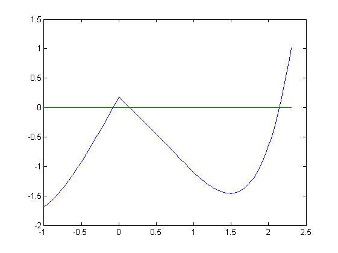

DEMOGRADIENT Short demonstration of gradients
Contents
- Some sample applications of the gradient toolbox
- Initialization of gradients
- Operations between gradients
- Complex arguments
- Access to the gradient
- An example in one unknown: The Gamma function
- The inverse Gamma function
- The inverse Gamma function with complex arguments
- Automatic differentiation with several unknowns
- Solution of a nonlinear system
- Verified solution of the nonlinear system
- Real function evaluation
- Interval function evaluation
- Interval gradient function evaluation
- Verified solution of the nonlinear system with Broyden's function
- Verified solution of a nonlinear system with sparse gradients
- Verified solution of a nonlinear system with full gradients
- Verified solution of a nonlinear system with 5000 uknowns
- Non-differentiable functions
- Verified solution of non-differentiable functions
- Enjoy INTLAB
Some sample applications of the gradient toolbox
Gradients implement automatic differentiation in forward mode, which is conveniently to implement using the Matlab operator concept.
Initialization of gradients
In order to use automatic differentiation, the independent variables need to be identified and values have to be assigned. This is performed by the function "gradientinit", for example
format compact short _ u = gradientinit([ -3.1 ; 4e-3 ])
gradient value u.x =
-3.1000
0.0040
gradient derivative(s) u.dx =
(1,1) 1
(2,2) 1
The total size of the input is the number of independent variables, in the example 2, hence u represents a column vector of length 2 and defines two independent variables u(1) and u(2) with gradients [1 0] and [0 1], respectively.
Operations between gradients
If at least one operand is of type gradient, operations are executed as gradient operations. For example,
x = gradientinit(3.5); y = exp(3*x-sqrt(x))
gradient value y.x = 5.5924e+003 gradient derivative(s) y.dx = 1.5283e+004
For f(x):=exp(3*x-sqrt(x)), the result y contains in y.x the function value f(3.5) and in y.dx the derivative f'(3.5):
y.x, y.dx
ans = 5.5924e+003 ans = 1.5283e+004
Complex arguments
When evaluating the expression for another argument, use the same statement as before with new values.
x = gradientinit(-3.5+.2i); y = exp(3*x-sqrt(x))
gradient value y.x = 7.6944e-006 -2.4944e-005i gradient derivative(s) y.dx = 2.9683e-005 -7.2588e-005i
Access to the gradient
The principle works for functions in several unknowns the same way. Define, for example, the following function from R^3->R^3 :
f = @(x)( [ -2*x(1)*x(2)+4*x(3)^2 ; sin(x(2))/sqrt(pi-x(1)) ; atan(x(2)-x(3)) ] ) f([1.5;-1;0.7])
f =
@(x)([-2*x(1)*x(2)+4*x(3)^2;sin(x(2))/sqrt(pi-x(1));atan(x(2)-x(3))])
ans =
4.9600
-0.6568
-1.0391
then the function value and gradient at [1.5;-1;0.7] is computed by
y = f(gradientinit([1.5;-1;0.7]))
gradient value y.x =
4.9600
-0.6568
-1.0391
gradient derivative(s) y.dx =
(1,1) 2.0000
(2,1) -0.2000
(1,2) -3.0000
(2,2) 0.4217
(3,2) 0.2571
(1,3) 5.6000
(3,3) -0.2571
where y.x contains the function value and y.dx the gradient, which is in this case the Jacobian. The gradient with respect the third unknown x(3) can be accessed by
y.dx(3,:)
ans = (1,2) 0.2571 (1,3) -0.2571
However, it is recommended to use
y(3).dx
ans = (1,2) 0.2571 (1,3) -0.2571
that is not to access the components of the gradient (Jacobian) but the gradient of the component. The advantage is visible when redefining the input function as a row vector:
f = @(x)( [ -2*x(1)*x(2)+4*x(3)^2 sin(x(2))/sqrt(pi-x(1)) atan(x(2)-x(3)) ] ) f([1.5;-1;0.7])
f =
@(x)([-2*x(1)*x(2)+4*x(3)^2,sin(x(2))/sqrt(pi-x(1)),atan(x(2)-x(3))])
ans =
4.9600 -0.6568 -1.0391
Then the "Jacobian" is a three-dimensional array because the gradient is always stored in the "next" dimension:
y = f(gradientinit([1.5;-1;0.7]))
gradient value y.x =
4.9600 -0.6568 -1.0391
gradient derivative(s) y.dx =
y.dx(1,1,:) =
(1,1) 2.0000
(1,2) -3.0000
(1,3) 5.6000
y.dx(1,2,:) =
(1,1) -0.2000
(1,2) 0.4217
y.dx(1,3,:) =
(1,2) 0.2571
(1,3) -0.2571
It is problematic to access the components of y.dx, while accessing the gradient of the component works as expected:
y(3).dx
ans = (1,2) 0.2571 (1,3) -0.2571
An example in one unknown: The Gamma function
According to Stirling's formula it is for u -> inf,
1 1 139 571
Gamma(u) ~ C * ( 1 + --- + ----- - ------- - --------- + ... )
12u 2 3 4
288u 51840u 2488320uwith
-u u-0.5 C = e u sqrt(2*pi) .
The following function evaluates Stirling's formula. It is also suited for vector input.
function y = g(u)
C = exp(-u) .* ( u.^(u-0.5) ) * sqrt(2.0*pi) ;
v = (((( -571.0/2488320.0 ./ u - 139.0/51840.0 ) ./ u ...
+ 1.0/288.0) ./ u ) + 1.0/12.0 ) ./ u + 1.0;
y = C .* v;A corresponding inline function is
format long e g = @(u) ( ( exp(-u) .* ( u.^(u-0.5) ) * sqrt(2.0*pi) ) .* ... ( (((( -571.0/2488320.0 ./ u - 139.0/51840.0 ) ./ u ... + 1.0/288.0) ./ u ) + 1.0/12.0 ) ./ u + 1.0 ) ) u = [ 3.5 61 5 ] g(u)
g =
@(u)((exp(-u).*(u.^(u-0.5))*sqrt(2.0*pi)).*(((((-571.0/2488320.0./u-139.0/51840.0)./u+1.0/288.0)./u)+1.0/12.0)./u+1.0))
u =
3.500000000000000e+000 6.100000000000000e+001 5.000000000000000e+000
ans =
3.323346278704310e+000 8.320987112733666e+081 2.399999414518977e+001
The inverse Gamma function
Next we calculate the inverse Gamma function. For example, compute u such that g(u) = 100. Consider the following simple Newton procedure with starting value u=5.
u = gradientinit(5); uold = u; k = 0; while abs(u.x-uold.x) > 1e-12*abs(u.x) | k < 1 uold = u; k = k+1; y = g(u) - 100; u = u - y.x/y.dx; end k u.x g(u.x)
k =
9
ans =
5.892518760472736e+000
ans =
9.999999999999997e+001
Due to the approximation error in Stirling''s formula, about six figures are correct.
The inverse Gamma function with complex arguments
The same is possible for complex arguments. We use the same Gamma function and the same Newton procedure except that some u is searched with g(u) = 100 + 100i. We use the same starting value u=5.
u = gradientinit(5); uold = u; k = 0; while abs(u.x-uold.x) > 1e-12*abs(u.x) | k < 1 uold = u; k = k+1; y = g(u) - 100 - 100i; u = u - y.x/y.dx; end k u.x g(u.x)
k =
10
ans =
6.701615293582063e+000 +3.757828161591650e+000i
ans =
1.000000000000003e+002 +1.000000000000002e+002i
Due to approximation error in Stirling''s formula, about six figures are correct.
Automatic differentiation with several unknowns
Automatic differentiation with several unknowns works the same way. Consider the following example by Broyden:
.5*sin(x1*x2) - x2/(4*pi) - x1/2 = 0 (1-1/(4*pi))*(exp(2*x1)-exp(1)) + exp(1)*x2/pi - 2*exp(1)*x1 ) = 0
with initial approximation [ .6 ; 3 ] and one solution [ .5 ; pi ]. The following inline function evaluates Broyden's function.
f = @(x) ( [ .5*sin(x(1)*x(2)) - x(2)/(4*pi) - x(1)/2 ; ...
(1-1/(4*pi))*(exp(2*x(1))-exp(1)) + exp(1)*x(2)/pi - 2*exp(1)*x(1) ] )
f =
@(x)([.5*sin(x(1)*x(2))-x(2)/(4*pi)-x(1)/2;(1-1/(4*pi))*(exp(2*x(1))-exp(1))+exp(1)*x(2)/pi-2*exp(1)*x(1)])
Solution of a nonlinear system
The nonlinear system defined by Broyden's function is solved by Newton's procedure as follows:
x = gradientinit([ .6 ; 3 ]); for i=1:5 y = f(x); x = x - y.dx\y.x; end x
gradient value x.x =
4.999999999999999e-001
3.141592653589794e+000
gradient derivative(s) x.dx =
(1,1) 1
(2,2) 1
For simplicity, we omitted the stopping criterion (see above). Here, y.dx is the Jacobian, y.x the function value at x.x, and -y.dx\y.x is the correction obtained by the (approximate) solution of a linear system.
Verified solution of the nonlinear system
For verified solution of the nonlinear system, we need a correct definition of the function. The main point is to make sure that a function evaluation with interval argument computes an inclusion of the function value. So first the transcendental number pi has to be replaced by an interval containing pi, for example
cPi = midrad(3.141592653589793,1e-15)
intval cPi = 3.14159265358979_e+000
Second, Broyden's function contains exp(1), which would be computed in pure floating-point without extra care. This can be cured using exp(intval(1)).
However, a new problem arises. When replacing "pi" in the function by "cPi" and 1 by intval(1), the function is always evaluated in interval arithmetic; a pure floating point iteration is no longer possible.
To solve this problem, we have to know the type of the incoming unknown "x". If "x" is double, replace "cPi" and intval(1) by its midpoint, if "x" is an interval, use "cPi" and intval(1) as is. This is done as follows.
function y = f(x) y = x; c1 = typeadj( 1 , typeof(x) ); cpi = typeadj( midrad(3.14159265358979323,1e-16) , typeof(x) ); y(1) = .5*sin(x(1)*x(2)) - x(2)/(4*cpi) - x(1)/2; y(2) = (1-1/(4*cpi))*(exp(2*x(1))-exp(c1)) + exp(c1)*x(2)/cpi - 2*exp(c1)*x(1);
This code is implemented in the function test.m .
Real function evaluation
Consider the following two function evaluations. First, f(x) is evaluated for real argument:
x = [ .6 ; 3 ]; test(x)
ans =
5.490000000000000e+000
2.254900000000000e+002
Interval function evaluation
Second, f(x) is evaluated with interval argument:
x = [intval('.6') ; 3 ]
y = test(x)
intval x = 6.00000000000000_e-001 3.000000000000000e+000 intval y = 5.490000000000000e+000 2.254900000000000e+002
The mathematical statement is the following. First, x is an interval vector such that x(1) is an inclusion of 0.6 and x(2)=3. Second, cPi is an interval containg the transcendental number pi. Third, y is an interval vector containing the exact value of Broyden's function evaluated at [ .6 ; 3 ].
Interval gradient function evaluation
Finally, we may define the interval x to be of type gradient:
x = gradientinit([intval('.6') ; 3 ])
Y = test(x)
intval gradient value x.x = 6.00000000000000_e-001 3.000000000000000e+000 intval gradient derivative(s) x.dx = (1,1) 1.000000000000000e+000 (2,2) 1.000000000000000e+000 intval gradient value Y.x = 5.490000000000000e+000 2.254900000000000e+002 intval gradient derivative(s) Y.dx = (1,1) 1.800000000000000e+000 (2,1) -7.00000000000000_e-001 (1,2) 3.300000000000000e+000 (2,2) 2.580000000000000e+001
The mathematical statement is that Y is an interval vector such that Y.x contains the exact value of Broyden's function evaluated at [ .6 ; 3 ], and Y.dx is an interval matrix containing the Jacobian of Broyden's function evaluated at [ .6 ; 3 ].
Verified solution of the nonlinear system with Broyden's function
The nonlinear system with Broyden's function and the given starting value [ .6 ; 3 ] can be solved with verification by
Y = verifynlss(@test,[ .6 ; 3 ])
intval Y = 1.044442683608499e-001 -1.435687434101879e+000
The first parameter gives the name of the function such that test(x) evaluates the function at "x". The result vector Y is verified to contain a real vector X such that f(X)=0. This solution X of the nonlinear system is proved to be unique within Y. This statement is mathematically true, it is taken care of all procedural, approximation and rounding errors.
It follows that an inclusion is not possible is roots are very close together: Since uniqueness of the root is proved, an inclusion is only possible if roots can be separated. An escape of that is described in DEMOSLOPE.
Verified solution of a nonlinear system with sparse gradients
Up to now we considered only toy examples to explain how the nonlinear system solver works. For a larger example consider the following example proposed by Abbot and Brent, which is implemented in the function test.
function y = test(x); % Abbot/Brent 3 y" y + y'^2 = 0; y(0)=0; y(1)=20; % approximation 10*ones(n,1) % solution 20*x^.75 y = x; n = length(x); v=2:n-1; y(1) = 3*x(1)*(x(2)-2*x(1)) + x(2)*x(2)/4; y(v) = 3*x(v).*(x(v+1)-2*x(v)+x(v-1)) + (x(v+1)-x(v-1)).^2/4; y(n) = 3*x(n).*(20-2*x(n)+x(n-1)) + (20-x(n-1)).^2/4;
An inclusion of the solution for 1000 unknowns is computed by
format short
sparsegradient(50)
n = 1000;
tic
x = verifynlss(@test,10*ones(n,1));
toc
max(relerr(x))
===> Gradient derivative stored sparse for 50 and more unknowns
ans =
50
Elapsed time is 0.512876 seconds.
ans =
4.5932e-016
Verified solution of a nonlinear system with full gradients
Here we specified that gradients with 50 unknowns and more are stored in sparse mode. This is the defauls when calling "sparsegradient".
Forcing gradients to use full storage results in a significantly increase of computing time.
sparsegradient(inf) n = 1000; tic x = verifynlss(@test,10*ones(n,1)); toc max(relerr(x))
===> Gradient derivative always stored full ans = Inf Elapsed time is 2.933115 seconds. ans = 4.5932e-016
Verified solution of a nonlinear system with 5000 uknowns
Note that the inclusion is of high accuracy. The results for a larger nonlinear system with 5000 unknowns is as follows.
sparsegradient(0) n = 5000; tic x = verifynlss(@test,10*ones(n,1)); toc max(relerr(x))
===> Gradient derivative always stored sparse
ans =
0
Elapsed time is 6.380053 seconds.
ans =
5.5869e-016
Non-differentiable functions
The given function need not be differentiable everywhere. Consider, for example,
f = inline('abs(x)')
f(gradientinit(infsup(-.1,2)))
f =
Inline function:
f(x) = abs(x)
intval gradient value ans.x =
[ 0.0000, 2.0000]
intval gradient derivative(s) ans.dx =
[ -1.0000, 1.0000]
Verified solution of non-differentiable functions
The inclusion of a root is searched for near the given approximation. Consider
f = vectorize(inline('x*sinh(x)-3*exp(abs(x)-.5)+x*cos(x+1)+2*cosh(x)'))
close
x=linspace(-1,2.3);
plot(x,f(x),x,0*x)
f =
Inline function:
f(x) = x.*sinh(x)-3.*exp(abs(x)-.5)+x.*cos(x+1)+2.*cosh(x)
 It seems there are three roots. Note that the function contains abs(x). Indeed,
format long
verifynlss(f,-.5)
verifynlss(f,.5)
verifynlss(f,2)
intval ans = -0.07707181827987 intval ans = 0.14381565238483 intval ans = 2.14372206306996
there are three roots, and the inlcusions are of high accuracy. One can also calculate an inclusion of multiple roots. Since the problem is ill-posed, it has t be regularized. Consider
X = verifynlss2(@(x)(sin(x)-1),1.5)
intval X = 1.57079632679489 0.00000000000000
It is proved that there exists some parameter e in X(2) such that the function g(x):=f(x)-e has a truely double root in X(1). Note the accuracy of the inclusions. It looks like the inclusion of e is a true zero. However, this is due to the "_"-format: add +/-1 to the last visible digit produces a valid inclusion:
format long e infsup X
intval X = [ 1.570796326794895e+000, 1.570796326794897e+000] [ -1.110223024625157e-016, 2.220446049250315e-016]
The function "verifynlss2" is applicable to multivariate functions as well.
For more details, see "help verifynlss" or "help verifynlss2" or
S.M. Rump: Verification methods: Rigorous results using floating-point arithmetic. Acta Numerica, 19:287-449, 2010.
to be downloaded from "www.ti3.tuhh.de/rump" and the literature cited over there.
Enjoy INTLAB
INTLAB was designed and written by S.M. Rump, head of the Institute for Reliable Computing, Hamburg University of Technology. Suggestions are always welcome to rump (at) tuhh.de